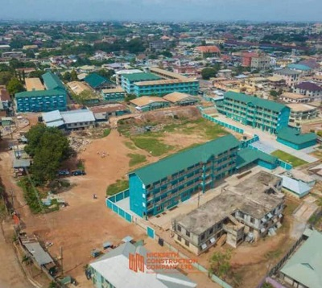

About us
Know more about Kumasi Senior High Technical School.
Know more about Kumasi Senior High Technical School.
 KSTS until recently (2008), known as Kumasi Senior High Technical School was established as a co-educational institution in 1991. It is one of the hundred and fourty-six(146) senior secoundary schools that were opened throughout the contry during the introduction of the Educational Return Programme. The school started in 1996 with 250 students and 12 tutors. Currently, the school has 2900 students with 130 teachers and 53 non-teaching staff. The school has trained over five thousand (5000) students as at now. It has it's core values, mission and vision which pupiles in the school abide and authorities. It is located in Ashanti Region and found in Kumasi - Patasi. The school has it motto as 'Recapturing True Values'.
Kumasi Senior High Technical School is Known to be part of the best science schools in Ashanti Region and also in Ghana. It has a lot of achievement and successors. Kumasi Senior High Technical School was established to train peoples to become successors and good citizens to ensure and enhance tolerance amoung their selfs.
Mr. Andrews Boateng being the current headmaster for Kumasi Senior High school has held in the raise of good academics and learning in the school. KSTS shortly is also part of the best senior high schools in Ashanti Region. In 2019 Wassce results, it was flabagasted and a lot passed same as 2020. In 2023 the school was classified as the best qualifiers of Wassce which rose to the apex level of excellence
The school's main objective is to train students to effectively use their heads, hands and hearts, so as to be useful to themselves, the school and the society as a whole in future.
To create an enabling environment to facilitate effective, efficient teaching and learnig; ensure that parent and gardians provide all materials needed for their wards; recruit better qualified and hardworking teachers; and motivate all to put best in all fields of learning, teaching and traniing.
To train student to effectively and efficiently use their heads, hands and heart to be useful to themselves and society as a whole now and future.
location: Patasi, Kumasi
Latitude: 6.680907
Longitude: -1.643849
District: Kumasi Metropolitan